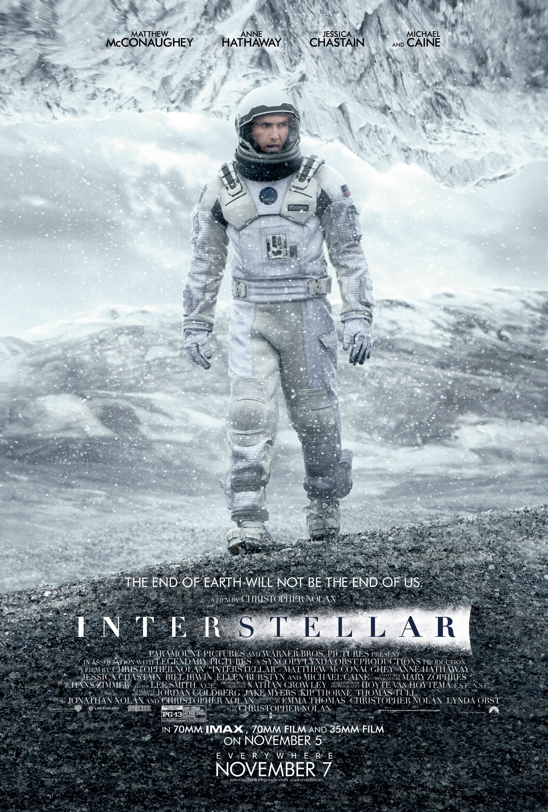

Interstellar

במאי הסרט: כריסטופר נולאן
שנה: 2014
ז'אנר: מדע בדיוני, דרמה והרפתקאות
שחקנים: מתיו מקונוהיי, אן האת'וויי, ג'סיקה צ'סטיין ומייקל קיין
הסרט מספר על קופר, טייס לשעבר שיוצא למסע מסוכן בחלל כדי למצוא כוכב לכת חדש שיציל את האנושות מכדור הארץ ההולך ונחרב. במהלך המסע הוא וחברי הצוות מתמודדים עם סכנות, חורים שחורים ותופעות הקשורות לזמן. במקביל, קופר מנסה לשמור על הקשר עם בתו מרפי, שאותה השאיר מאחור. בסופו של דבר, בזכות הקשר ביניהם, קופר מצליח לעזור להציל את האנושות.